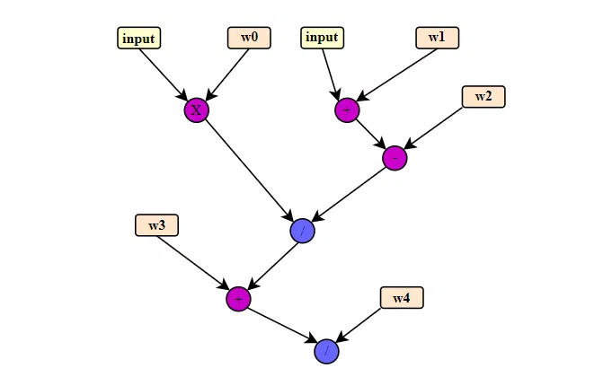
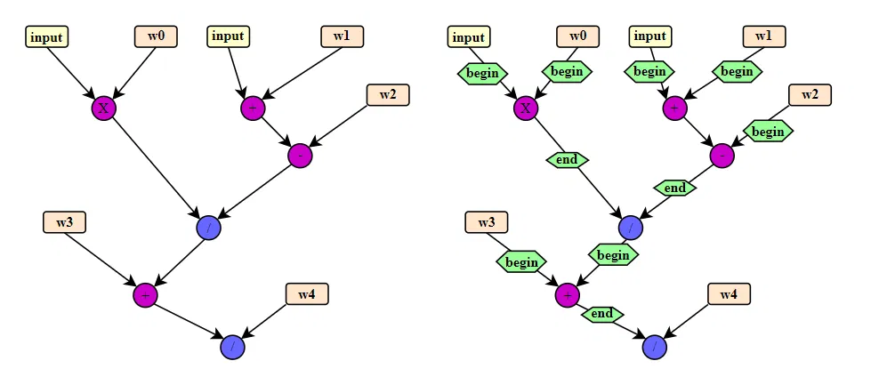

# 前言
本篇通过举例说明 TVM 切分子图的方法。
TVM 切分子图，是将整个图中的部分算子拆分出来，包装为一个函数。TVM 把它称为复合函数。切分子图有很多用处，比如算子融合、跨平台优化、做 layergroup 等。TVM 为子图切分提供了好用的工具，本篇文章将结 《【BYOC】TVM 添加自定义编译器 ccompiler》，来介绍一下如何使用 TVM 的工具切分子图，令自定义编译器 ccompiler 支持的子图在 ccompiler 执行，不支持的子图在 CPU 运行的。
参考链接：《【BYOC】TVM 添加自定义编译器 ccompiler》
作为初学者，错误在所难免，还望不吝赐教。
# TVM 工具
TVM 需要一个注释器，为需要切分的图结构的起止地点标记出来，之后 TVM 就可以帮助将子图切分出来。
例如 TVM 支持 这个 DNNL 的外部编译器，那么可以使用 mod = transform.AnnotateTarget(["dnnl"])(ref_mod) 这个注释器来标记 DNNL 支持的子图结构（TVM 已经提供了 DNNL 的注释器），然后使用 mod = transform.PartitionGraph()(mod) 将子图切分出来。
我们以 “将 ccompiler 支持的子图切分出来” 这个目标为例，介绍这个过程。
ccompiler 只支持 + - * 三个算子，目标是将所有 ccompiler 支持的算子切分成子图，交给 ccompiler 编译和计算，其他算子交给 CPU 计算。
如下图所示：
这个图中出现了一个 / 算子，需要将该算子留下来，其余算子切成子图，交给 ccompiler 进行编译和计算。

原图结构如下：
fn (%x: Tensor[(10, 10), float32], %w0: Tensor[(10, 10), float32], %w1: Tensor[(10, 10), flot32], %w2: Tensor[(10, 10), float32], %w3: Tensor[(10, 10), float32], %w4: Tensor[(10, 10), float32]) { | |
%0 = add(%x, %w1); | |
%1 = multiply(%x, %w0); | |
%2 = subtract(%0, %w2); | |
%3 = divide(%1, %2); | |
%4 = add(%3, %w3); | |
divide(%4, %w4) | |
} |
接下来需要将 ccompiler 支持的子图结构标记出来，标记原理如图所示：

图示比较清楚：将连续的、支持的算子，用 begin 和 end 隔离出来，形成一个子图。注释器的参考写法、调用例子，可以参考 TVM 官方代码。
添加注释之后的图结构：
def @main(%x: Tensor[(10, 10), float32], %w0: Tensor[(10, 10), float32], %w1: Tensor[(10, 10), flot32], %w2: Tensor[(10, 10), float32], %w3: Tensor[(10, 10), float32], %w4: Tensor[(10, 10), float32]) { | |
%0 = annotation.compiler_begin(%x, meta[relay.attrs.CompilerAttrs][0]); | |
%1 = annotation.compiler_begin(%w0, meta[relay.attrs.CompilerAttrs][1]); | |
%2 = multiply(%0, %1); | |
%3 = annotation.compiler_begin(%x, meta[relay.attrs.CompilerAttrs][3]); | |
%4 = annotation.compiler_begin(%w1, meta[relay.attrs.CompilerAttrs][4]); | |
%5 = add(%3, %4); | |
%6 = annotation.compiler_begin(%w2, meta[relay.attrs.CompilerAttrs][5]); | |
%7 = subtract(%5, %6); | |
%8 = annotation.compiler_end(%2, meta[relay.attrs.CompilerAttrs][2]); | |
%9 = annotation.compiler_end(%7, meta[relay.attrs.CompilerAttrs][6]); | |
%10 = divide(%8, %9); | |
%11 = annotation.compiler_begin(%10, meta[relay.attrs.CompilerAttrs][7]); | |
%12 = annotation.compiler_begin(%w3, meta[relay.attrs.CompilerAttrs][8]); | |
%13 = add(%11, %12); | |
%14 = annotation.compiler_end(%13, meta[relay.attrs.CompilerAttrs][9]); | |
divide(%14, %w4) | |
} |
添加注释之后，直接调用 TVM 的切分工具： mod = transform.PartitionGraph()(mod) ，实现子图切分。
切分之后的结构：
def @main(%x: Tensor[(10, 10), float32] /* ty=Tensor[(10, 10), float32] */, %w0: Tensor[(10, 10), float32] /* ty=Tensor[(10, 10), float32] */, %w1: Tensor[(10, 10), float32] /* ty=Tensor[(10, 10), float32] */, %w2: Tensor[(10, 10), float32] /* ty=Tensor[(10, 10), float32] */, %w3: Tensor[(10, 10), float32] /* ty=Tensor[(10, 10), float32] */, %w4: Tensor[(10, 10), float32] /* ty=Tensor[(10, 10), float32] */) -> Tensor[(10, 10), float32] { | |
%0 = @tvmgen_default_ccompiler_main_0(%x, %w0) /* ty=Tensor[(10, 10), float32] */; | |
%1 = @tvmgen_default_ccompiler_main_2(%x, %w1, %w2) /* ty=Tensor[(10, 10), float32] */; | |
%2 = divide(%0, %1) /* ty=Tensor[(10, 10), float32] */; | |
%3 = @tvmgen_default_ccompiler_main_5(%2, %w3) /* ty=Tensor[(10, 10), float32] */; | |
divide(%3, %w4) /* ty=Tensor[(10, 10), float32] */ | |
} | |
def @tvmgen_default_ccompiler_main_0(%ccompiler_0_i0: Tensor[(10, 10), float32] /* ty=Tensor[(10, 10), float32] */, %ccompiler_0_i1: Tensor[(10, 10), float32] /* ty=Tensor[(10, 10), float32] */, Compiler="ccompiler", Primitive=1, Inline=1, global_symbol="tvmgen_default_ccompiler_main_0") -> Tensor[(10, 10), float32] { | |
multiply(%ccompiler_0_i0, %ccompiler_0_i1) /* ty=Tensor[(10, 10), float32] */ | |
} | |
def @tvmgen_default_ccompiler_main_2(%ccompiler_2_i0: Tensor[(10, 10), float32] /* ty=Tensor[(10, 10), float32] */, %ccompiler_2_i1: Tensor[(10, 10), float32] /* ty=Tensor[(10, 10), float32] */, %ccompiler_2_i2: Tensor[(10, 10), float32] /* ty=Tensor[(10, 10), float32] */, Compiler="ccompiler", Primitive=1, Inline=1, global_symbol="tvmgen_default_ccompiler_main_2") -> Tensor[(10, 10), float32] { | |
%4 = add(%ccompiler_2_i0, %ccompiler_2_i1) /* ty=Tensor[(10, 10), float32] */; | |
subtract(%4, %ccompiler_2_i2) /* ty=Tensor[(10, 10), float32] */ | |
} | |
def @tvmgen_default_ccompiler_main_5(%ccompiler_5_i0: Tensor[(10, 10), float32] /* ty=Tensor[(10, 10), float32] */, %ccompiler_5_i1: Tensor[(10, 10), float32] /* ty=Tensor[(10, 10), float32] */, Compiler="ccompiler", Primitive=1, Inline=1, global_symbol="tvmgen_default_ccompiler_main_5") -> Tensor[(10, 10), float32] { | |
add(%ccompiler_5_i0, float32] { | |
add(%ccompiler_5_i0, %ccompiler_5_i1) /* ty=Tensor[(10, 10), float32] */ | |
} |
可以看到三个子图 @tvmgen_default_ccompiler_main_0 ， @tvmgen_default_ccompiler_main_2 ， @tvmgen_default_ccompiler_main_5 用单独的函数进行包装，在主函数中进行调用。
可以通过 TVM 官方例子来学习如何写这个注释器。
# 后记
本博客目前以及可预期的将来都不会支持评论功能。各位大侠如若有指教和问题，可以在我的 github 项目 或随便一个项目下提出 issue，并指明哪一篇博客，我看到一定及时回复！